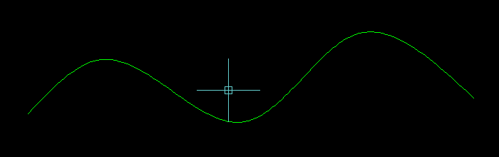

Slinky Text
This page is delivered for consistency purposes only, as part of the LeeMac sample module of DynALisp, which shows how DynALisp turns existing AutoLISP programs into a module. The program and its description are the work of Lee Mac, who keeps all the credit for them. The original page, with the latest version, is on Lee Mac's website: https://lee-mac.com/slinkytext.html
| Function Syntax | LM-CurveText – original syntax: CurveText (see aliases) |
| Current Version | 1.4 |
| Compatible with AutoCAD for Mac? | No |
| Compatible with AutoCAD LT? | Yes |
| Original Page | lee-mac.com/slinkytext.html |
Program Description
I suppose this program should really be listed under the 'Novelty Programs' section, however, perhaps some users may regard it as a practical solution.
The program will create individual text objects for each character in a selected/specified string, and, following selection of a curve object (line, arc, ellipse, circle, spline, lwpolyline etc), will proceed to dynamically space & rotate each character to align with the curve - creating a visual appearance similar to that produced by the Express Tools' Arc Aligned Text command.
The user is provided with additional refinement controls: character offset may be altered using the +/- keys, and furthermore, character spacing along the curve may be adjusted using the </> keys.
If the program is run in AutoCAD2000 or later, the resultant text items form an anonymous group, and hence may be selected as one item.
Preview

Bundled program notes
;;--------------------=={ CurveText.lsp }==-------------------;;
;; ;;
;; Positions Text along a curve object (arc, circle, spline, ;;
;; ellipse, line, lwpolyline, polyline), and rotates text ;;
;; to fit to the curve accordingly. ;;
;; ;;
;; If run in versions > AutoCAD2000, the resultant text will ;;
;; form an anonymous group. ;;
;;------------------------------------------------------------;;
;; Author: Lee Mac, Copyright © 2012 - www.lee-mac.com ;;
;;------------------------------------------------------------;;
;; Version: 1.4 - 22-02-2012 ;;
;;------------------------------------------------------------;;
Command Names And Aliases
As in every DynALisp module, each program of this sample module has one main command, named LM-*, and the original command names of Lee Mac's page are kept as its aliases: they run the same command, and can be added, renamed or removed in Dyl-Suite (saved in Resources\Aliases.csv).
| Command | Aliases | Name |
|---|---|---|
| LM-CurveText | CURVETEXT | Curve Text |